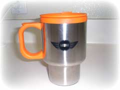

| ..*..*.. 2003年5月4日(日) くもり&雨 ..*..*.. ここのところ、ずっと忙しい日が続いていました。右のミニのカップを手に入れてから、毎日コーヒーを家で入れて持っていっています。ふぅ、おいしい(^^) さて、今日は私の仕事の説明をしてみようと思います。 私の仕事は、うちの会社のソフトウェア（アプリケーション）のローカライゼーション(Localization、ローカリゼーション、L10N)といって、英語版のUI(ユーザーインターフェース)を日本語、フランス語、ドイツ語、イタリア語、スウェーデン語、スペイン語、オランダ語にすることです。私は去年まではローカライゼーションに関することは日本語化だけだったのですが、今年からヨーロッパ語化のまとめ役(Lead)をしています。 やり方はどの言語も同じなのと、ダブルバイトの問題がある一番たいへんな日本語化を3年やってきているので、それほど難しくはないと思って引き受けたのですが、言語が多くてひとりではできないので、みんなに指示したり、目の前に持ち上がる問題に対して、先にやらなくちゃいけないことを見極めなくてはならない(プライオリティをつける)ので、私にとってはそういう面で新しいことが多く、忙しくなっています。 開発サイクルは、開発者(Developer)がプログラムを書き、QA (日本語で言うと『品質管理』--でもちょっと日本語の品質管理とは仕事が違うような気がする)がテストするというサイクルを繰り返して製品ができあがってきます。製品がかなりできあがってくると、私たちローカライゼーションのチームが入ります。 ローカライゼーションのチームは開発者(Developer)に属するのですがプログラムは書きません。でも、開発者(Developer)の書いたプログラムを壊してはいけないので、そういう知識を持った人が必要になります。そしてかなりの量を短い期間にこなさなくてはならないので、一時的に何人かの人を雇います。ですので、そういう人を面接することと、決まったらトレーニングすることも私の仕事となります。 使えない人だとわかると(マネージャーが)首にすることはできますが、もうその分の人を補充することは時間的に無理なので、全て私がカバーしなくてはいけなくなってしまいます。また、仕事はできても責任感のない人を雇ってしまうと、私の負担が大きくなります。でも、今回はいい人を雇うことができ、その点ではほっとひと安心できました。 トレーニングが終わると、その人たちといっしょに、QAがテストできるものを出す(アプリケーションのローカライゼーション版のビルドの成功)というのが次の大きなポイントになります。せっかくローカライゼーション版作っても画面がすべて文字化けしていたりしたら、テストはできなくなります。万一、決められた期限までにテストできるものが出せない場合は、そのために待っていたQAの時間を全て奪うことになるので大問題です。 3か月くらい前からこの期間に焦点をあてて仕事するのですが、実際やってみると細かい問題が出てきたりして、それがローカライゼーションの問題なのか、ローカライゼーションしたことによって新たに持ち上がった開発上の問題なのかを見極めて、私たちの問題でないと証明できたら、すぐに開発者に話をつけに行かなくてははなりません。この期間3日間くらいはとても心臓に悪いです(^^; 今回の製品はこのたいへんな期間をなんとかクリアすることができました。 まだ気は抜けないのですが、ちょっとは安心していいのかな。 |